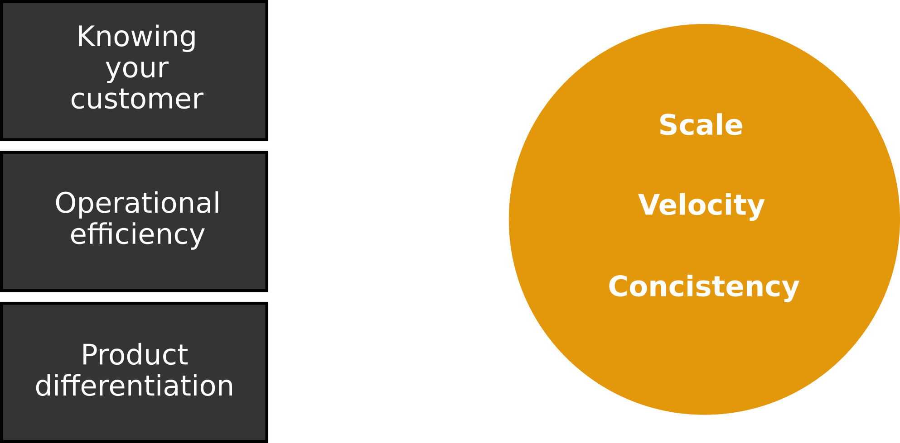
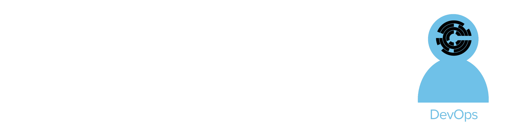
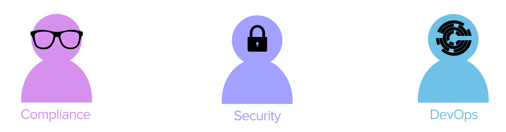
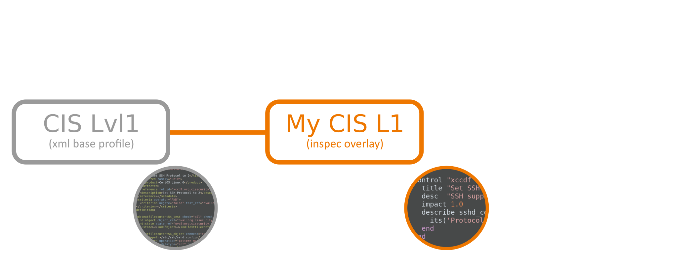
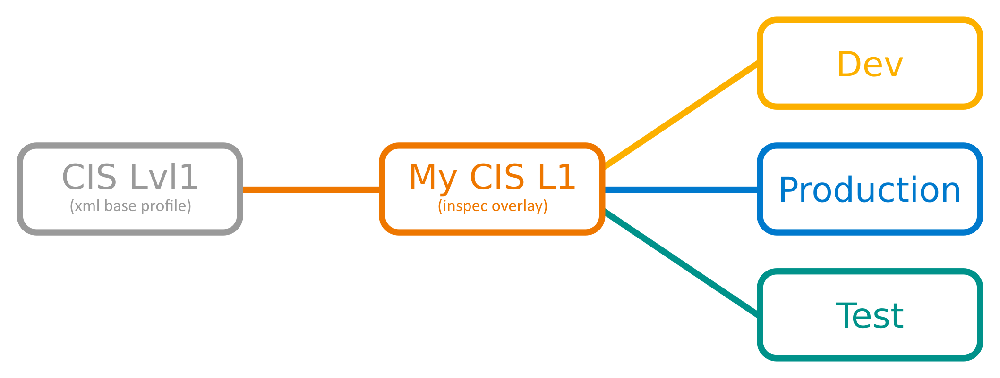

Chef Compliance
Security and DevOps for High Velocity Organizations
$> whoarewe
Dominik Richter
Product Manager at Chef
The promise of the coded business
Transformation to high-velocity
What is Chef?
DevOps automation from
conception to production.
What is  Compliance?
Compliance?
Compliance as Code.
What is it not?
- (H)IDS / IPS
- Firewall
- AntiVirus
- Pentesting tool
Compliance as Code.
Traditional Compliance
Dev & Ops set up an App
Security meets operations
Documentation
SSH supports two different protocol versions. The original version, SSHv1, was subject to a number of security issues. Please use SSHv2 instead to avoid these.
Scripting tools
> grep "^Protocol" /etc/ssh/sshd_config | sed 's/Protocol //'
2
Compliance language
describe sshd_config do
its('Protocol') { should cmp 2 }
end
InSpec
Compliance language
control 'ssh-1234' do
impact 1.0
title 'Server: Set protocol version to SSHv2'
desc "
Set the SSH protocol version to 2. Don't use legacy
insecure SSHv1 connections anymore...
"
describe sshd_config do
its('Protocol') { should eq('2') }
end
end
One language
- Linux, Windows, BSD, Solaris, AIX, ...
Windows
control 'windows-base-201' do
impact 1.0
title 'Strong Windows NTLMv2 Authentication Enabled; Weak LM Disabled'
desc '
@link: http://support.microsoft.com/en-us/kb/823659
'
describe registry_key('HKLM\System\CurrentControlSet\Control\Lsa') do
it { should exist }
its('LmCompatibilityLevel') { should eq 4 }
end
end
One language
- Linux, Windows, BSD, Solaris, AIX, ...
- Bare-metal, VMs, Containers
Tiny HowTo
inspec exec test.rb
.
Finished in 0.00228 seconds (files took 1.95 seconds to load)
1 example, 0 failures
Tiny HowTo
inspec exec test.rb
inspec exec /path/to/profile
inspec exec github.com/chef/some-profile.git
Test your local node
inspec exec test.rb
Test remote via SSH
inspec exec test.rb -i vagrant.key -t ssh://root@172.17.0.1:11022
no Ruby / agent on the node
Test remote via WinRM
inspec exec test.rb -t winrm://Admin@192.168.1.2 --password super
no Ruby / agent on the node
Test Docker Container
inspec exec test.rb -t docker://3cc8837bb6a8
no SSH / agent on the container
Anatomy of a container test
describe package('wget') do
it { should be_installed }
end
describe file('/fetch-all.sh') do
it { should be_file }
its('owner') { should eq 'root' }
its('mode') { should eq 0640 }
end
Anatomy of a container test
inspec exec dtest.rb -t docker://f02e x1 8h44m master[d140c6a]
....
Finished in 0.1537 seconds (files took 1.77 seconds to load)
4 examples, 0 failures
One language
- Linux, Windows, BSD, Solaris, AIX, ...
- Bare-metal, VMs, Containers
- Nodes, DBs, Endpoints, APIs (AWS, ...)
DB testing
describe mysql_session.query("SELECT user, host FROM mysql.user WHERE host = '%'") do
its(:stdout) { should be empty }
end
AWS testing
Vpc.new(id: 'vpc_id').security_groups.each do |security_group|
describe security_group do
it { should_not have_ingress_rule().with_source('0.0.0.0/0') }
end
end
CIS and SCAP
Great security benchmarks
Great coverage
- Red Hat Enterprise Linux, Ubuntu, SUSE, Oracle Linux, ...
- Microsoft Windows 7, 8, Server 2008, 2012
- IBM AIX, HP-UX, VMware ESXi
- Oracle MySQL, Apache Tomcat, MS SQL Server, MS IIS
Written in XML
Set SSH Protocol to 2
CentOS Linux 6
Set SSH Protocol to 2
/etc/ssh/sshd_config
^\s*Protocol\s+(\S+)\s*(?:#.*)?$
1
Source and Copyright: Center for Internet Security
Converted to InSpec
control "xccdf_org.cisecurity.benchmarks_rule_6.2.1_Set_SSH_Protocol_to_2" do
title "Set SSH Protocol to 2"
desc "SSH supports two different and incompatible protocols: SSH1 and SSH2. SSH1 was the original protocol and was subject to security issues. SSH2 is more advanced and secure."
impact 1.0
describe file("/etc/ssh/sshd_config") do
its(:content) { should match /^\s*Protocol\s+(\S+)\s*(?:#.*)?$/ }
end
file("/etc/ssh/sshd_config").content.to_s.scan(/^\s*Protocol\s+(\S+)\s*(?:#.*)?$/).flatten.each do |entry|
describe entry do
it { should eq "2" }
end
end
end
Native InSpec
control "xccdf_org.cisecurity.benchmarks_rule_6.2.1_Set_SSH_Protocol_to_2" do
title "Set SSH Protocol to 2"
desc "SSH supports two different and incompatible protocols: SSH1 and SSH2. SSH1 was the original protocol and was subject to security issues. SSH2 is more advanced and secure."
impact 1.0
describe sshd_config do
its('Protocol') { should cmp 2 }
end
end
Profile foundation
Make adjustments
Native InSpec
include_control "cis/cis-centos6-lvl1" do
skip_control "xccdf_org.cisecurity.benchmarks_rule_1.5.1_Set_UserGroup_Owner_on_etcgrub.conf"
skip_control "xccdf_org.cisecurity.benchmarks_rule_1.5.2_Set_Permissions_on_etcgrub.conf"
control "xccdf_org.cisecurity.benchmarks_rule_3.9_Remove_DNS_Server" do
impact 1.0
end
end
control "my-own-1" ...
Spread to other environments
Compliance as Code.
Competitive Advantage
Book: The High Velocity Edge - Steven J. Spears
Safety at Velocity
- Risk reduction when constantly changing your systems
- As part of the workflow. Not after, not later.
- Test for quality, Test for compliance